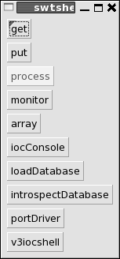
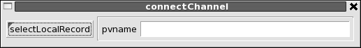
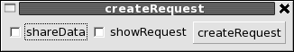
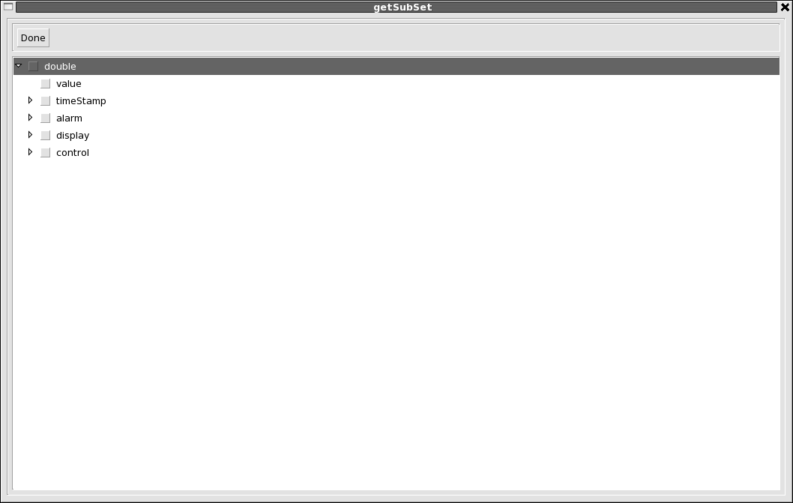
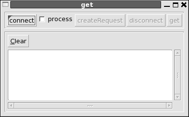
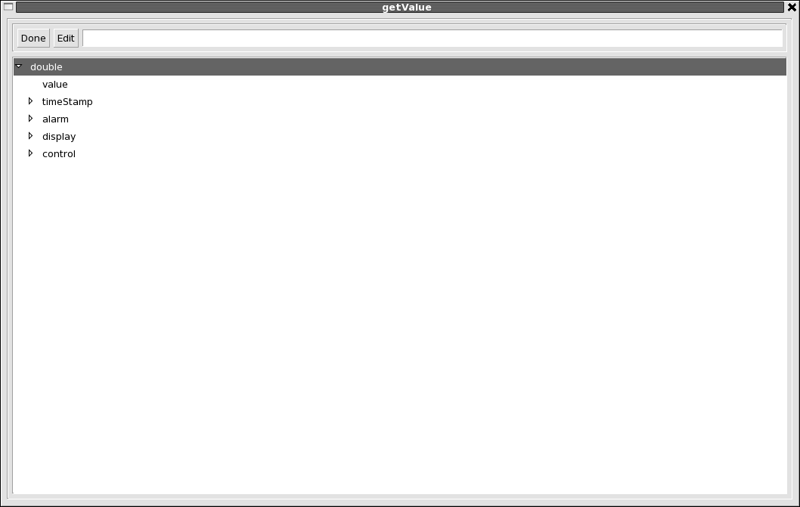
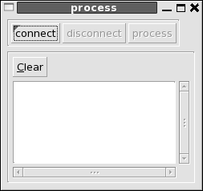
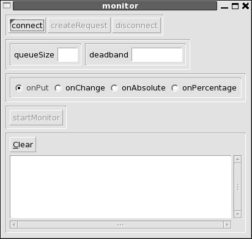
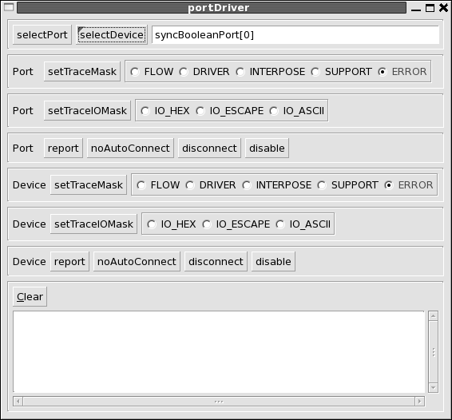
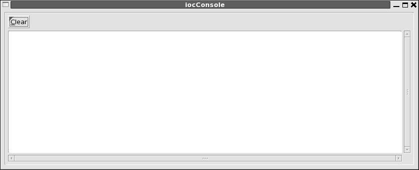

|
||||||||||
| PREV PACKAGE NEXT PACKAGE | FRAMES NO FRAMES | |||||||||
See:
Description
| Interface Summary | |
|---|---|
| ChannelConnect | A set of controls for connecting to a channel. |
| ConnectChannel | A set of controls for connecting to a channel. |
| CreateRequest | Create a request PVStructure for channel access. |
| CreateRequestRequester | Requester for a CreateRequest. |
| GUIData | |
| PrintModified | Print the fields of a PVStructure that have been modified. |
| PropertyGet | Get an array of the property names for a channelField. |
| SelectField | A shell for selecting a field of a record. |
| SelectLocalRecord | Shell to select the name of a local JavaIOC record. |
| Class Summary | |
|---|---|
| ArrayFactory | Shell for processing a channel. |
| ChannelConnectFactory | |
| ConnectChannelFactory | |
| CreateRequestFactory | Shell for creating a PVStructure for a pvRequest. |
| GetFactory | A shell for getting values from a channel. |
| GUIDataFactory | Factory which implements CDGet. |
| IntrospectDatabaseFactory | A shell for introspecting a JavaIOC Database. |
| IOCConsoleFactory | A shell for getting values from a channel. |
| LoadDatabaseFactory | A shell for loading a new Database Definition or Record Instance into a running JavaIOC. |
| MonitorFactory | A shell for monitoring a channel. |
| PortDriverFactory | A shell for introspecting a JavaIOC Database. |
| PrintModifiedFactory | Factory which implements PrintModified. |
| ProcessFactory | Shell for processing a channel. |
| PropertyGetFactory | Factory that implements PropertyGet. |
| PutFactory | |
| SelectFieldFactory | Factory which implements SelectField. |
| SelectLocalRecordFactory | Factory which implements SelectLocalRecord. |
| SWTMessageFactory | Factory that manages messages. |
| SwtshellFactory | A GUI iocshell implemented via Eclipse SWT (Standard Widget Toolkit). |
| V3iocshellFactory | Call the V3 iocshell |
CONTENTS
This package provides a GUI shell implemented via the SWT toolkit that comes with eclipse. The default JavaIOC package overview document gives brief instructions for starting the swtshell. If you want to communicate with a V3 EPICS IOC then the option "-server server/beforeStartIOC.txt" must be given when the javaIOC is started.
The following window appears when swtshell is started:

The window has the following buttons:
NOTE: After text is typed into any text input window, the enter key must be pressed.
The get, put, process, monitor, and array buttons each start a new window. Each window provides the ability to connect to a PV (Process Variable).
This window gets data from a local or remote IOC. The data is accessed via Channel Access, which can be either V3 or V4 channelAccess
ForEPICS V3 Channel Access only the following data can be accessed:
See package org.epics.ioc.caV3 for details about caV3.
The get, put, process, monotor, and array windows all have a connect button. When this button is pressed the following window appears:

If selectLocalRecord is clicked then a list of all the records in the local javaIOC is presented. When a record is selected a request is made to create a channel connected to the record and control returned to the window that has the connect button.
A pvname can be entered. When return is given a request is made to create a channel to the selected record and control returned to the window that has the connect button.
The get, put, and monotor windows all have a createRequest button, which is activated after connecting to a channel. createRequest allows you to select an arbitarary set of fields from the PVRecord to which the channel is connected. When the createRequest button is pressed the following window appears:

If shareData is selected then when a request is made it is a request for shared data. This means that the server will share the scalar and array data with the record itself instead of keeping a copy. If showRequest is selected then when createRequest is done the created request structure is shown.
When the createRequest button is clicked the following window appears:

This window allows the user to select an arbitrary set of fields from the PVRecord to which the channel is attached. When the arrow for a structure field is clicked the fields for that structure appear. A field is selected by clicking the bod next to the field name. If a structure field is selected the entire structure is selected.
The following window appears when the get button is pushed:

The first row has the following widgets:
The following window appears when the put button is pushed:
Except for put the top row is just like get.
When the put button is clicked then what happens depends of how many fields where selected from the PVRecord. If only a single scalar or array field was selected, then a text entry box apppears. When a value is entered and the return key is pressed then this value is sent via channel access.
If more than a single scalar or array field waas selected then when put is clicked a window appears that allows the user to provide values to each scalar or array field of the selected fields. This window is:

This display allows the user to give values to any of the scalar or array fields.
If a primitive or array of primitives is selected then when edit is clicked the following happens:
When done is clicked the modified fields are sent to the channel access server and written to the PVRecord.
The following window appears when the process button is pushed:

The connect an disconnect buttons are for connecting and disconnecting to/from a channel. The process button sends a process request to the channel access server.
The following window appears when the monitor button is pushed:

The controls in the first row are like for get and put.
The second row and third allows you to set the:
The following window appears when the loadDatabase button is pushed:
This is used to load additional IOCDB definitions to a running IOC. It has the following controls:
The following window appears when the introspectDatabase button is pushed:

The top menubar allows the use to see all the structure definitions in the master database.
The next three row allows the user to select and interact with a local record. The select button is used to select a local record. The text window after select shows the currently selected record and can also be used to enter a record name. The remaining buttons apply to the selected button. They are:
The third row has two buttons that show information. They are:
The following window appears when the portDriver button is pushed:

The first row has buttons to select a port and a device. The other rows are for setting trace options and for connect and enable commands.
The following window appears when the iocConsole button is pushed:

When this is started, it calls iocdb.addRequester where iocdb is the master IOCDB. Whenever any code sends a message to the iocdb, the message is displayed on the iocConsole window. Note that iocdb puts the messages on a queue and has a separate thead that send the messages to the requesters.
|
||||||||||
| PREV PACKAGE NEXT PACKAGE | FRAMES NO FRAMES | |||||||||